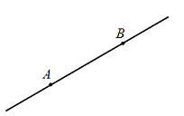
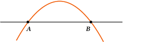
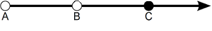

Аксиоматика планиметрии
Геометрическая фигура - любое
множество
точек.

Планиметрия - геометрия плоскости.
Всякое аксиоматичексое постороение геометрии включает в себя:
-
список основных, неопределяемых понятий(объектов, отношений и т.д.)
-
список утверждений, не подлежащих доказательству (аксиом)
-
определения других, более сложных понятий
-
формулировки и доказательства других утверждений (теорем, лемм, следствий и т.д.)
Теорема - утверждение, имеющее большое теоретическое значение.
Лемма - утверждение, имеющее вспомогательное значение
(например, необходимое для доказательства лишь какой-нибудь теоремы).
Следствие - утверждение, сравнительно просто выводимое из другого утверждения.
Примечание. Аксиомы иногда называют постулатами.
Аксиомы планиметрии
Основные, неопределяемые понятия:
точка,
прямая,
длина
отрезка. Внегеометрические понятия:
множество,
число,
принадлежность (элемента множеству), отображение.
Прямая рассматривается как множество
точек. Неопределяемое отношение:
лежать между (для трех различных
точек одной
прямой).
Плоскость - множество всех
точек.
Аксиомы:
-
Каждой прямой
принадлежит, по крайне мере, две
точки.

-
Имеются, по крайней мере, три точки,
не лежащие на одной
прямой.

-
Через любые две различные точки проходит
прямая, и притом только одна.
Т.е. так быть не может:

-
Из трех различных точек
прямой одна и только одна
лежит
между двумя другим, причем если А лежит
между
В и С, то А лежит
между С и В.
Прямую, проходящую через
точки А и B, обозначают (АВ) или просто АВ. Пусть А, В - различные точки.
Отрезком
[AB] называется множество, состоящее из
точек А,В и всех
точек
прямой АВ,
лежащих между А и В. (Иногда отдельную
точку А
удобно считать отрезком [АА]).Из аксиомы 4 следует, что [АВ] и [ВА] - один и тот же отрезок.
Точки А и B называются
концами
отрезка. Часто
отрезок [АВ] обозначается просто АВ.
-
Каждому
отрезку [AB] поставлено в соответствие положительное
число АВ, называемое
длиной
отрезка [AB]
и удовлетворяющее условию: если C лежит
между A и B, то АС+СВ=АВ.
Пусть А, B, С - различные
точки
одной
прямой. Будем говорить, что А и B лежат по разные стороны от
точки С,
если С лежит
между A и B. Луч [AB) - множество, состоящее из
точки А и всех
точек
прямой АВ, лежащих по ту сторону
от А, где лежит B.

Точка А -
вершина луча AB.
Иногда луч [AB) обозначают просто AB.
Пусть α -
прямая. Будем говорить, что
точки А и В лежат по разные стороны от
прямой α,
если отрезок [AB]
пересекается с α во
внутренней точке
(т.е точке, отличной от А и В). Можно доказать, что
каждая прямая α разбивает всю
плоскость, за исключением
точек
прямой α, на две части
(полуплоскости) так,
что любые две
точки одной
полуплоскости лежат по одну сторону от
прямой α, а разных
полуплоскостей - по разные
стороны от α.

Угол ∠(a,b) - пара
лучей а, b с общей
вершиной.

Расстояние
между
точками А и B - это
длина
отрезка [AB]
(расстояние
между A и A равно 0). Движение
плоскости -
взаимно однозначное отображение плоскости на себя, сохраняющее
расстояние
между любыми двумя
точками. Две
фигуры Ф и Ф' называются
равными
(или конгруэнтными), если существует движение
плоскости, переводящее одну из них в другую. Из определения
следует:
-
любая фигура
равна самой себе: Ф=Ф;
-
если Ф=Ф', то Ф'=Ф;
-
если Ф=Ф' и Ф'=Ф'', то Ф=Ф'';
-
На любом луче от его
начала можно отложить
отрезок заданной
длины, и протом только один.
-
От любого луча в данную
полуплоскость можно отложить
угол,
равный данному, и притом только один.
Две
прямые называются
параллельными, если они не имеют общих
точек.

-
Через
точку, не лежащую на данной
прямой, проходит одна и только одна
прямая,
параллельная данной.

Примечание. Эта аксиома называется аксиомой параллельности Евклида или пятым постулатом Евклида.